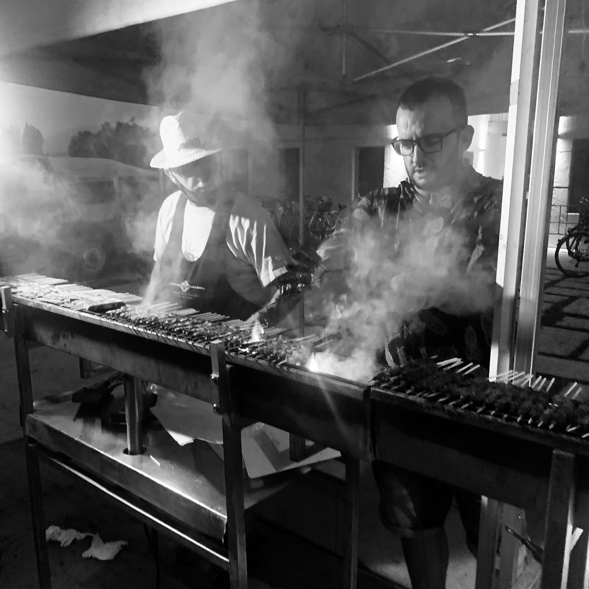
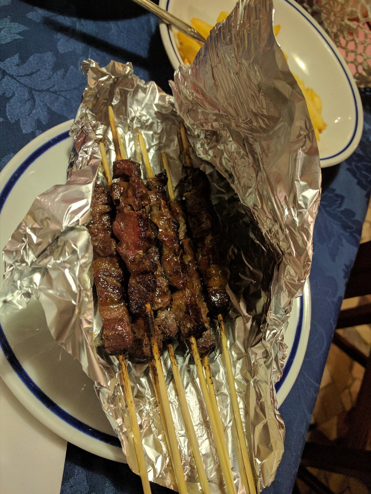
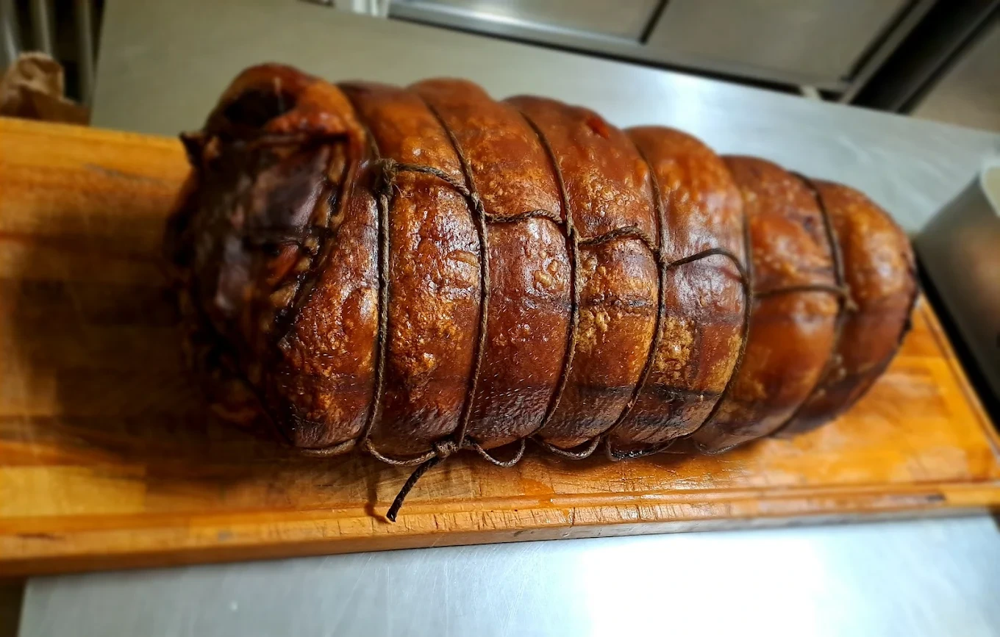
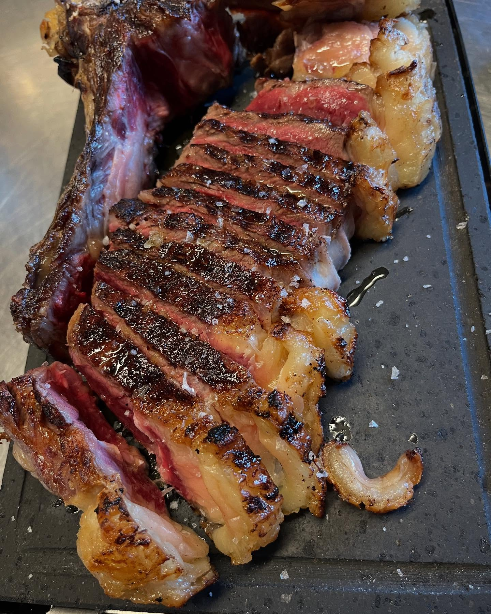
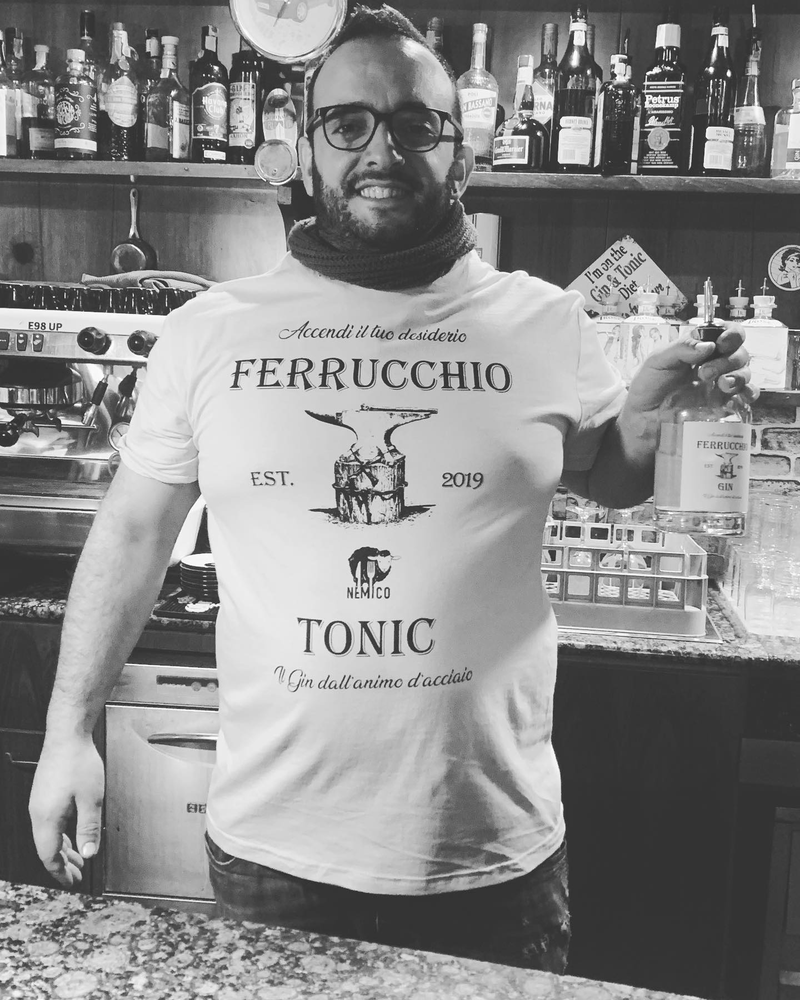
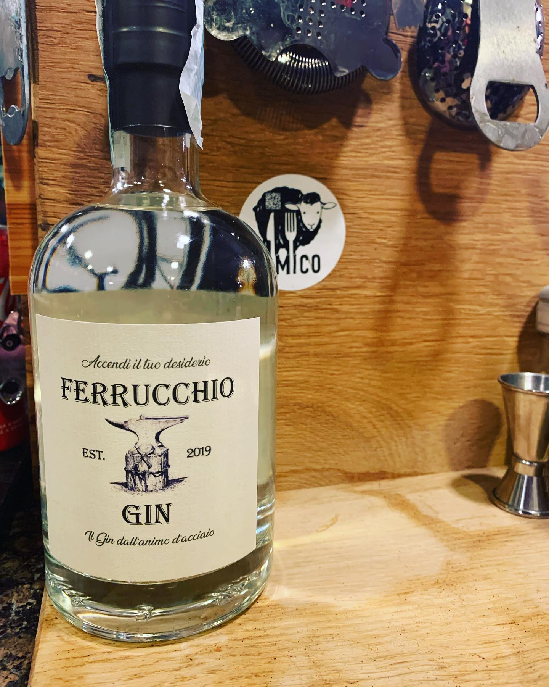
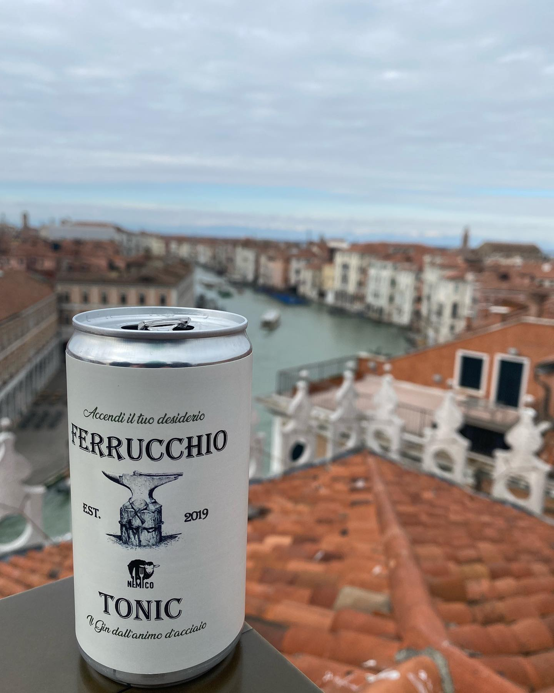
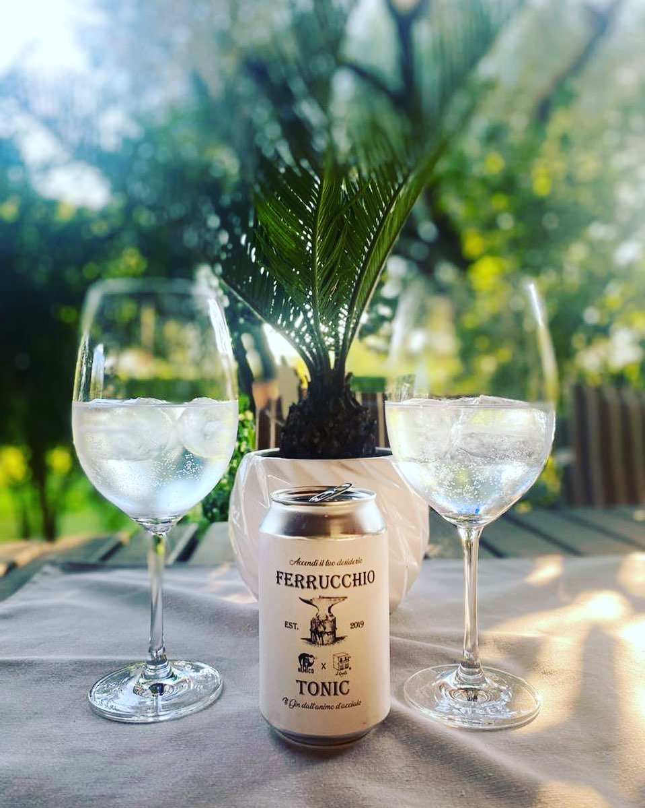
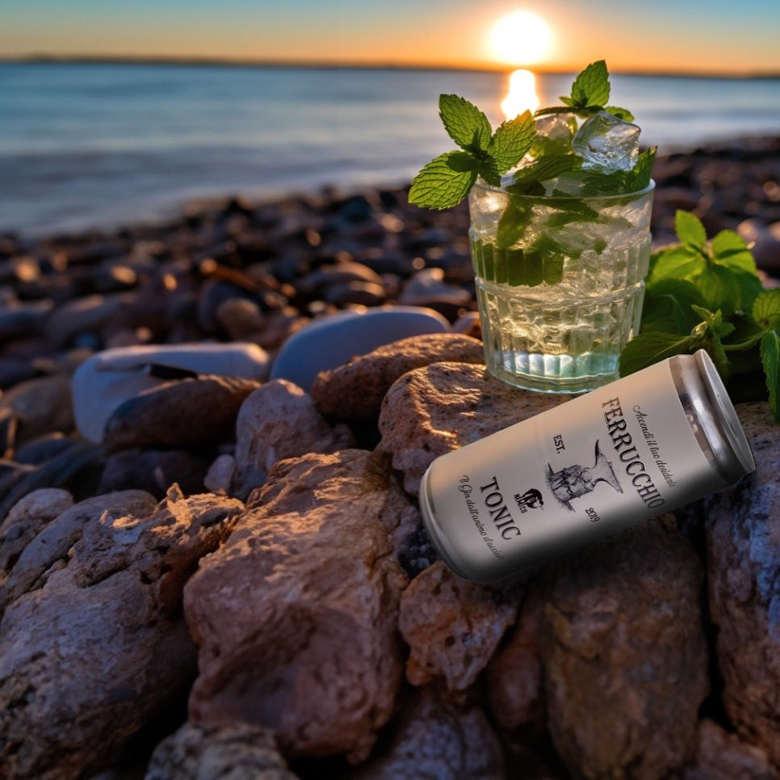
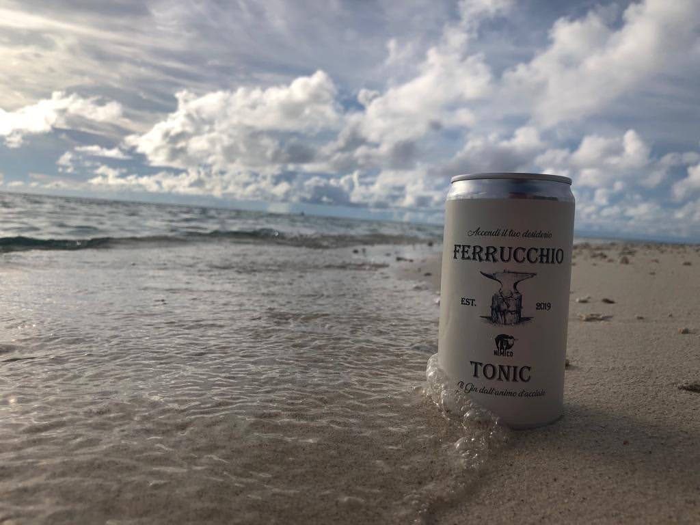

★★★★★
Da Fernando si va da consapevoli. Cibo buono, servizio adeguato, locale semplice. Bella serata, arrosticini ottimi!
Paolo S.
Griglia viva, arrosticini abruzzesi, niente fronzoli. Solo sostanza, come dev'essere.




Da Fernando si va da consapevoli. Cibo buono, servizio adeguato, locale semplice. Bella serata, arrosticini ottimi!
Qualità prezzo ottima, carne buonissima, ambiente bello. Un po' spartano ma ha il suo fascino. Ci tornerò sicuramente.
Un ambiente vintage, ma ciò che conta è la sostanza. Arrosticini di pecora ottimi e porchetta squisita!!! Un ottimo rapporto fra qualità e prezzo.
Personale molto gentile e servizio veloce. Arrosticini davvero fenomenali, carne e contorni di qualità e cotti magistralmente.
Cibo ottimo, cucinato a regola d'arte, arrosticini speciali. Ambiente senza pretese, semplice. Da provare.
Arrosticini favolosi e ottima porchetta, tutte specialità abruzzesi, il tutto accompagnato da un rabosello fantastico.
Da Fernando, «il nemico»: gustosi arrosticini abruzzesi e squisita porchetta! Fernando è diventato un'icona per la sua simpatia, simbolo dell'integrazione culturale e della buona cucina tipica.
Ottimi arrosticini direttamente dall'Abruzzo. Da esperto in materia mi hanno pienamente soddisfatto. Buone anche le bruschette per antipasto.
Accendi il tuo desiderio.
Il Gin dall'animo d'acciaio. Nato nel 2019 dalla passione di Thomas, il titolare de Il Nemico: un gin artigianale pensato per chi non si accontenta.
Disponibile in bottiglia e in lattina pronta da bere, Gin Tonic già miscelato per chi ha fretta e non vuole rinunciare al gusto.





